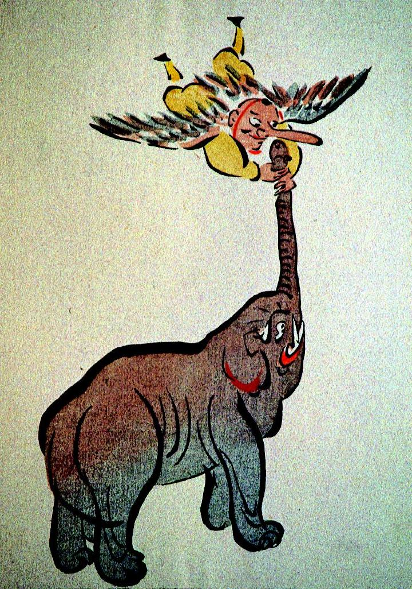

象の鼻につかまる天狗。黄色い山伏装束を着て、背中には羽が生えている。鼻が長く、ひげが生えている。
出典：親書誌：A5_pushkin_0025：（天狗と象の鼻比べ；テングトゾウノハナクラベ）／日付：2011／資源識別子：A5_pushkin_0025_0001_0000
Copyright (c)2010- International Research Center for Japanese Studies, Kyoto, Japan. All rights reserved.